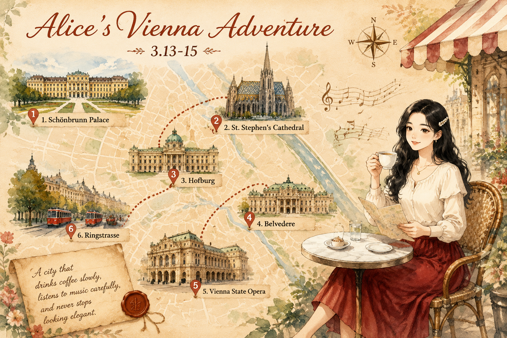
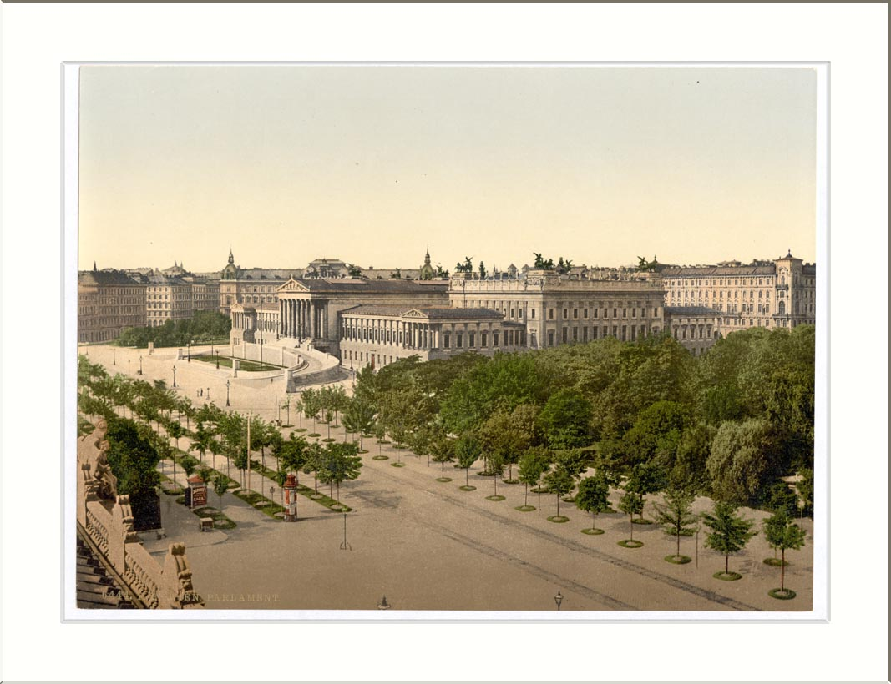

维也纳Vienna
World-1000 · 古典乐、咖啡馆与环城大道
World-1000 · 古典乐、咖啡馆与环城大道

古典乐、咖啡馆与环城大道，把优雅写进日常秩序。
维也纳是哈布斯堡王朝的心脏，也是欧洲古典乐的中心舞台。几个世纪的宫廷文化与咖啡传统，把庄重和日常揉在一起，铺成今天环城大道两侧的街景。
环城大道像一条项链，串起议会、市政厅、城堡剧院和博物馆区。巴洛克、哥特与新艺术并排站立，节奏克制而华丽。多瑙河从城北流过，给整座城市带来平缓的水汽。
维也纳咖啡馆在 2011 年列入联合国非物质文化遗产，这里的服务生会默认你“待一下午”。萨赫蛋糕和苹果卷的甜，是严肃建筑间隙的小停顿。
早上我先去了美泉宫。三月的风还有点凉，但花园里没有夏天那种拥挤。我站在喷泉边，听到远处有人在练小提琴，声音断断续续，像鸟叫一样。
中午躲进一家咖啡馆，点了 Melange 和一块萨赫蛋糕。店里很安静，只有报纸翻页声和咖啡机呲呲的声响。我摊开地图，把下午要去的地方连起来：霍夫堡、圣斯蒂芬大教堂，然后沿着环城大道慢慢走。
傍晚经过国家歌剧院，金色灯光刚亮起来。我没有进去，只是站在街角听完了一段散场音乐。维也纳的优雅，原来不是故意表演，而是生活本身。
古典乐、咖啡馆与环城大道，把优雅写进日常秩序。


